左右滑动切换内容
阅读点亮精彩童年
入园体验活动
1、为**（公园、大型商场名字）引流，共 同提升**机构（商家、商场名字）和**幼儿园在**地区的品牌影响力和知名度。
2、让幼儿喜欢阅读、爱上阅读。
2岁以上 20—30组家庭
1、音乐《爸爸瞧妈妈看宝宝的小手真好看》
2、大的串珠和绳子
3、彩色纸若干
4、一次性纸盘
5、A4硬卡纸人手一张 6、彩笔若干
7、皮球人手一个、纸箱三个、拱形门三个
1、音乐《爸爸瞧妈妈看宝宝的小手真好看》
2、大的串珠和绳子
3、彩色纸若干
4、一次性纸盘
5、A4硬卡纸人手一张
6、彩笔若干
7、皮球人手一个、纸箱三个、拱形门三个
1、音乐《爸爸瞧妈妈看宝宝的小手真好看》
2、大的串珠和绳子
3、彩色纸若干
4、一次性纸盘
5、A4硬卡纸人手一张
6、彩笔若干
7、皮球人手一个、纸箱三个、拱形门三个
1、音乐《爸爸瞧妈妈看宝宝的小手真好看》
2、大的串珠和绳子
3、彩色纸若干
4、一次性纸盘
5、A4硬卡纸人手一张
6、彩笔若干
7、皮球人手一个、纸箱三个、拱形门三个
提前一天 电话通知家长
语调亲切适中，有电话记录
1.上午电话提示家长参加入园准备，并统计参加人数。如不能按时参加问明原因并记录，邀请其参加下次活动。
2.人数不够时及时邀约其他家长参加。 话术：
亲爱的XXX小朋友家长您好，明天上午（XX点）幼儿园丰富多彩的入园体验活动就开始了，请您提前10分钟带宝贝入园。幼儿园里为宝贝准备了充足的饮用水，保证宝贝足够喝水量，请您今晚和宝贝早点睡觉哦，明天精神充沛一起来幼儿参加好玩的游戏活动。（如自制点心，请在以上话术中补充）
确认背景音乐、话筒、音响设备、准备到位并能正常使用和播放，音控人员负责所有有关设备使用和播放。
关键点：所有音乐按照播放顺序储存在播放器（可准备2个备用）
1、户外游戏区：摆放户外游戏物品，张贴户外玩具安全提示，告知家长和幼儿注意安全，老师巡视指导。
2、室内暖场区：摆放儿童桌椅，桌上摆放好各类手头玩具，供幼儿进入等待区游戏。
关键点：品牌露出 摆放合理
1、户外游戏区：摆放户外游戏物品，张贴户外玩具安全提示，告知家长和幼儿注意安全，老师巡视指导。
2、室内暖场区：摆放儿童桌椅，桌上摆放好各类手头玩具，供幼儿进入等待区游戏。
关键点：品牌露出 摆放合理
检查活动需要的材料到位、老师准备工作到位。
关键点：摆放合理 活动物品摆放整齐
1、教师穿园服精神饱满，面带微笑，主动热情问好。（签到处负责人话术：上午好（下午好）欢迎XXX宝贝和家长来到XX幼儿园）
2、提示家长穿上一次性鞋套。
3、引导家长为幼儿签到。
4、为孩子贴姓名贴（位置：前胸），便于教师能准确叫出幼儿姓名
5、引导现场到达未报名的家长扫二维码进行活动报名。
关键点：所有音乐按照播放顺序储存在播放器（可准备2个备用）
1、保健医穿专业医护服装，带口罩，态度亲切、主动热情与幼儿家长打招呼为幼儿做入园常规检查。
2、保健医主动热情为幼儿测查体温、看手、口，并引导幼儿和家长使用消毒液洗手，使用指导语。（话术：搓搓小手，讲卫生）
由1名教师引导早来的幼儿与家长到达等待区，接待组老师给家长热情与幼儿游戏，主动与家长沟通，关注每个幼儿，并维护现场秩序。
关键点：
1. 统一品牌露出
2. 如幼儿体温状况异常跟家长协商建议休息
3. 课程/接待咨询组所有老师到场维护现场秩序一起互动
可选择户外/大型多功能厅/阳光房等
1.开场热身舞蹈。 主持人：
小朋友们好，家长们好，请家长们领着小朋友到我身边来，其他老师协助将室内外游戏区的小朋友集合到一起。（教育咨询顾问介绍今天和小朋友一起玩游戏的老师）这是XXX老师......（主要介绍课程组老师）
音乐律动《 快乐宝贝 》（可选用幼儿园歌或园内间操）
2、点名字——认识环节： 老师引导幼儿及家长入座，打招呼“问好”，逐一请幼儿说一说自己的名字，老师给予鼓励
师：小朋友们好，我的名字叫XXX,小朋友可以叫我XXX老师，很高兴认识小朋友们。接下来老师来认识一下小朋友的名字吧。 建议介绍形式一：老师可逐一来到幼儿身边询问
建议介绍形式二：老师可逐一请小朋友站到前面来介绍自己
3、我的小手 播放音乐律动《爸爸瞧妈妈看、宝宝的小手真好看》，边听音乐边做动作，可鼓励幼儿一起跟着老师律动，引出小手主题 主持人：老师准备了一段好听的音乐，我们一起听一听吧
“爸爸瞧妈妈看，宝宝的小手真好看；爸爸瞧妈妈看，宝宝的小手看不见，爸爸妈妈都来看，宝宝的小手又出现”宝贝们看看我们的小手长什么样子呀？
关键点：
课程/接待咨询组所有老师到场维护现场秩序一起互动
1、写完名字的小朋友进行洗手、如厕。（生活老师要在盥洗室里，提示幼儿排队，教给幼儿如何洗手，洗完后给幼儿递纸巾擦手。）
2、洗手出来的孩子，配班老师帮助幼儿拿水杯，喝少许温开水。
关键点：
使用专业指导语，关注个别幼儿
1.教师引导幼儿观察自己的小手，学说手指谣《大拇哥》，2-3遍 师：小朋友看看我们手上长着手指头，他们叫什么名字呢？我们一起玩个手指谣吧。
大拇哥、二拇第、中三娘、四小弟、小妞妞、去看戏，手心手背，心肝宝贝。
2.教师出示小手做事的图片“引导宝宝讨论“自己的小手会做什么”,鼓励幼儿大胆发言，
师：小朋友们你们的小手特别的能干、刚才和老师一起做手指谣、玩律动，小朋友想一想你的小手还会做什么？——引导幼儿调动已有经验，会刷牙、会洗脸、会穿鞋、会吃饭……
3.老师将幼儿的发言记录并做总结，鼓励幼儿尝试分组操作“串项链”、“撕面条”、“画小手”
--配班老师将桌子摆成三组，分别为“串项链”组，“撕面条”组，“画小手”组；引导幼儿自由选择小组延伸活动“小手真能干”
师：小朋友们的小手真能干，接下来我们就用能干的小手给爸爸、妈妈做个礼物好吗？
--老师分别介绍三个组材料如何操作，老师边介绍边演示，请小朋友自选区域操作开始操作
师：小朋友们这里可以穿珠子给妈妈做“项链”；这里可以给爸爸做“面条”吃；这里可以和爸爸妈妈一起“画小手”，做一个漂亮的小手贺卡。
--教师分组轮流指导，鼓励幼儿大胆操作
关键点：
1.熟知活动内容，活动流程自然过渡，教师配合默契
2.教师精神状态良好，态度热情大方、使用专业指导语
教育咨询顾问上场主持接下来环节：
各位小朋友和家长们是不是在XXX幼儿园里度过了一个愉快的上午，小朋友们记住了老师的名字了吗？依次引导幼儿说出老师的名字，表扬幼儿。
接下来介绍幼儿园园长
1.园长对本次活动总结，并说明幼儿园的特色 园长发言： 欢迎小朋友和家长来到幼儿园，和老师一起度过了快乐而丰富的时。在这段时光中，小朋友和家长通过教育教学、户外活动、如厕盥洗、进餐加点、自由活动这几个环节，感受了幼儿园到底在做了什么，这几个环节基本是小朋友上幼儿的半天缩影。这是一次社会领域内的教学活动，” 课程介绍：小手真能干“惯穿了整个活动，孩子们通过快乐的游戏交往，主动探索操作，户外锻炼，更加深刻的理解小手的能干。这一切都源于教师对孩子年龄特点的把握，创设符合幼儿的游戏空间，让孩子在快乐中体验和收获。同时这次体验活动增强了亲子互动，让孩子从小感受爱，让家长收获爱。希望孩子在入园后，家长也能积极主动参加我们幼儿园举办的亲子活动，陪伴孩子快乐成长。 幼儿园理念：*****
2.教育咨询顾问介绍园所收费标准和优惠政策
3.幼儿吃完餐点后进入自选区域游戏，每区域一位老师陪幼儿游戏，并为家长讲解游戏中能够发展幼儿什么样的能力及拓展。
4.教育咨询组老师，针对家长报名问题，进行一对一咨询沟通，转化幼儿报名
关键点：话术统一 家长常见问题话术整理并提前学习
复盘： 活动目标（邀约人数、参加人数、转化率、意向家长）
活动效果（幼儿参与活动情况、家长互动、教师互相配合、话术介绍是否清晰、家长是否有新的需求和疑问、与家长沟通是否到位）
活动改进（下一次活动注意事项，罗列出来，将所有整理入话术手册，便于下次活动使用）
复盘要求： 每个教师都要发言，总结本次活动的优点和不足。